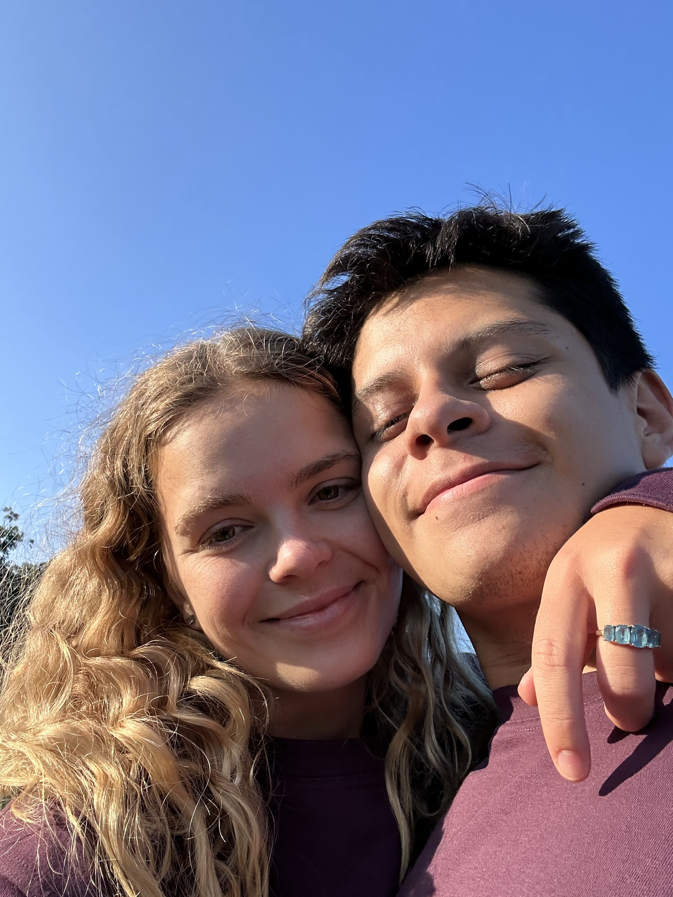
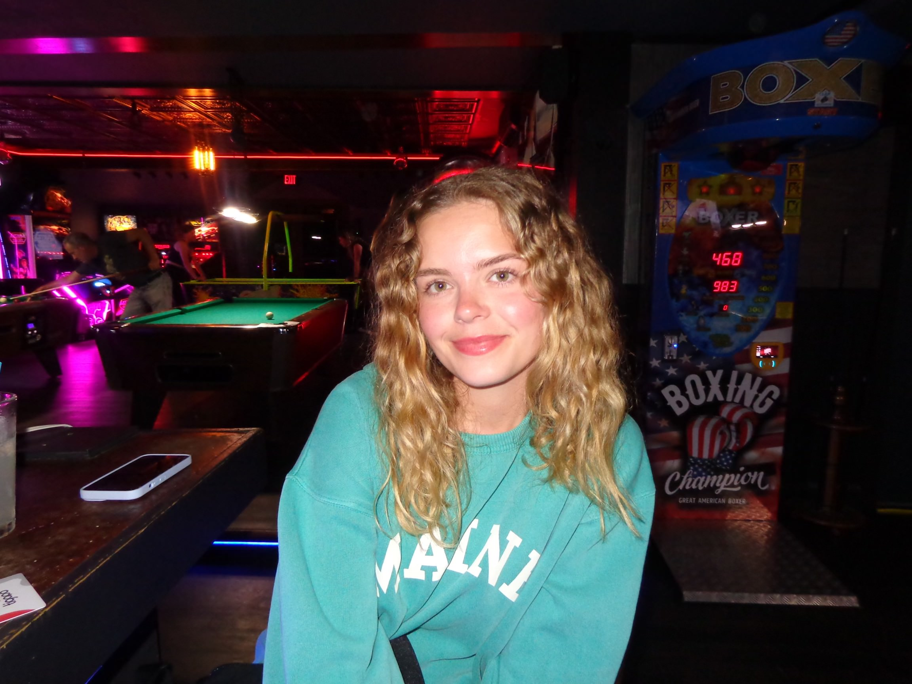
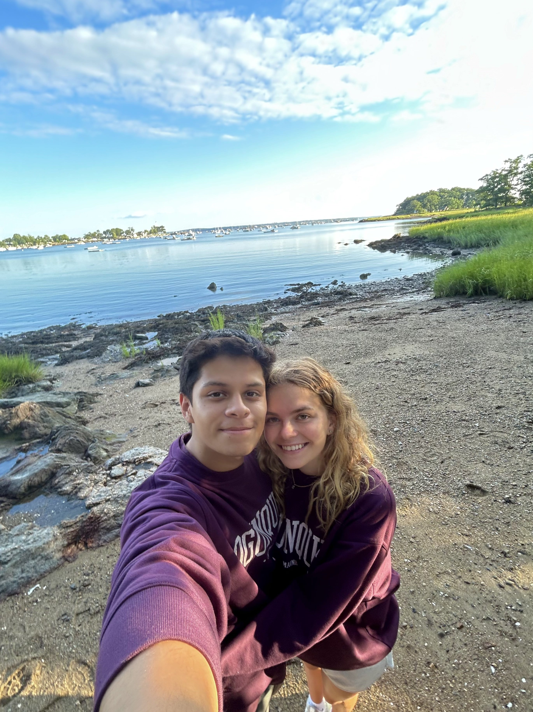

Today's yo special day!!





Today's yo special day!!
I’m writing this a week after spring break. 2 weeks ago I knew I loved you. It’s why I was always saying it and couldn’t wait to see you in person. I had known it for a while but seeing you in person brought it into reality. Seeing you in person made me realize that I have never loved anyone the way I love you. Every moment we spent together during this last week made me love and appreciate you even more. From eating pizza and watching avatar to going on a nice date at a semi formal restaurant, there wasn’t a single moment that I didn’t enjoy being by your side. The past week opened my eyes to see that, without a doubt, I want to spend the rest of life with you. I don’t care about the circumstances, as long as I have you I will be the happiest and best version of myself. Whenever I’m with you I’m able to forget about any of the stress I have. I’m able to be a kid again who is just enjoying life with his best friend. Your laugh brings me so much joy and everything about you makes me a happier person. I also have never felt this loved in my life. I feel that the love you constantly show me is something that I don’t have to work for. It feels like I have finally found someone who loves me for who I am. Someone who loves me for just being myself. I don’t feel the need to hide anything from you in fear of you loving me any less. I’m truly grateful to have you in my life and I hope you know how much you mean to me. I know we are just starting this journey but everyday I grow more and more certain that it’ll all be worth it in the end. There’s nothing in this world that I want more than to be with you.
Now I’m continuing this a couple of weeks later on a night where I can’t seem to fall asleep. There hasn’t been a minute since we’ve
been together that you haven’t crossed my mind. Of course we haven’t technically been together for that long as of writing this, but
I feel like we’ve been together since January. It’s crazy to think that you can love someone so much that they never seem to leave your
mind. It’s kinda like an addiction, where anything and everything reminds me of you. It could be as simple as a night sky that brings
me back to camp when we laid on the tennis courts together. Or hearing a random British accent that reminds me of your beautiful voice.
Such simple and random things that, given different circumstances, would have such different memories linked to them. All it would’ve
taken is for a different camp to reach out to you and I would’ve never known you. I would’ve never met you and never would’ve made all
the memories that I constantly want to relive. I am forever grateful that our paths somehow crossed despite the chance of us meeting
being insanely small. You have no idea how much you mean to me and I hope to spend the rest of my life trying to show you.
P.S. i know you like to look at pictures of us and tear up. My version of that is writing paragraphs about you and tearing up